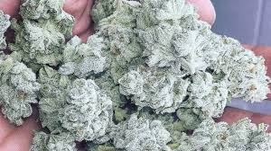
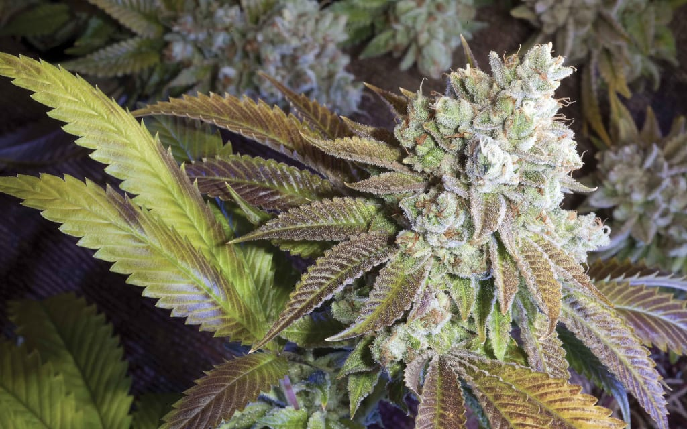
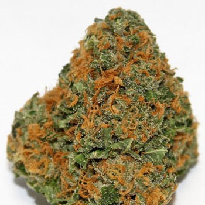
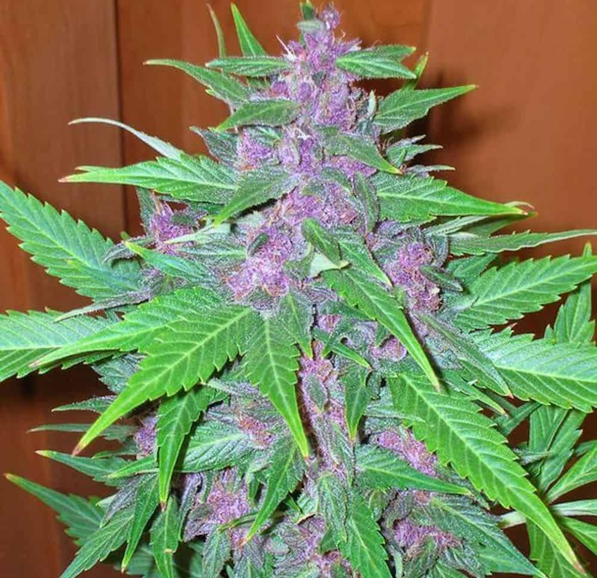
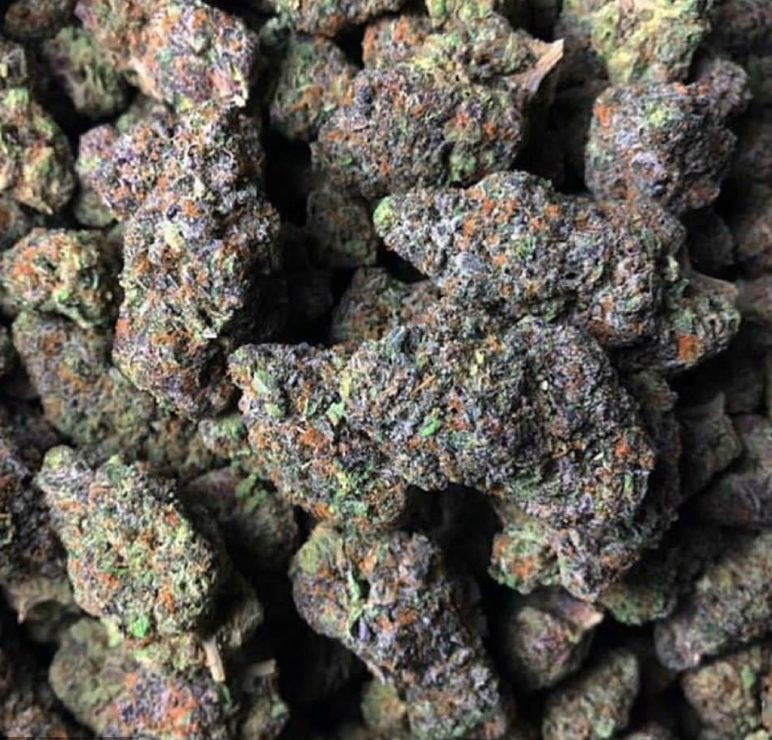

Mango Fruit is a 75/25 sativa-dominant strain. A descendant of Colombian Gold, a Nepali indica, and Thai and Swiss landrace strains, you can depend on Harlequin to provide clear-headed, alert sativa effects. Mango Fruit high levels of CBD make this strain one of the most effective out there for treatment of pain and anxiety. Flavors can range from earthy musk to sweet mango.
CHRONIC DREAD
By Mile High Dispensaries

Chronic Dread history is a complex California strain, the origins are believed to stem from a select phenotype of Mendocino Purps, while the essence is a blend of skunk, and fresh grapes. The effects to be deeply relaxing, sleep-inducing, and a great option for full-body pain relief. The short onset of effects make it a perfect nighttime strain for those who suffer from insomnia.
SNOW WHITE
By Mile High Dispensaries

Snow White is a hybrid of White Widow and an unknown North American indica strain, resulting a bushy and stout plant. This strain is said to descend from cultivars sourced from Afghanistan, Brazil, and India. White Rhino's high THC content makes it a popular choice among consumers looking for heavy-handed relaxation and symptom relief.
KILLA DINO
By Mile High Dispensaries

A strain that became popular in California dispensaries in 2005, Killa Dino contains flavors of grape, citrus, and hash. Its parents are Granddaddy Purple and OG Kush. No matter what your belief system, this strain is a "gift" with its dreamy, blissful effects. Its flowering time usually takes approximately 8-9 weeks.
BERRY DREADS
By Mile High Dispensaries

Berry Dreads stands is a pure indica cherished for its resinous buds and fast flowering. Itself a descendant of indigenous Afghani an strain. There are many different phenotypes of Berry Dreads, including Tahoe OG, and Ghost OG. Berry Dreads has given rise to one the most famous hybrids of all time.
44 K
By Mile High Dispensaries

44 K, a sativa-dominant hybrid originating in California, has achieved legendary status among West Coast strains. Crossing Blueberry with Haze, Blue Dream balances full-body relaxation with gentle cerebral invigoration. Novice and veteran consumers alike enjoy the level effects of Blue Dream.